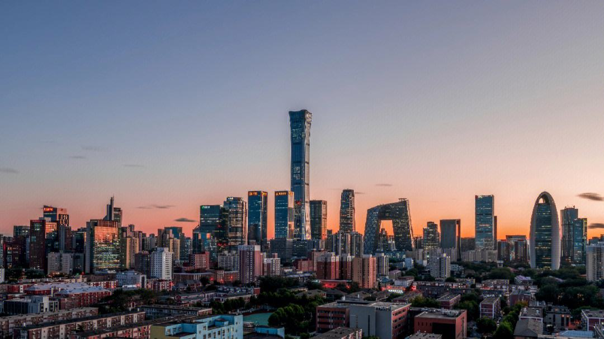
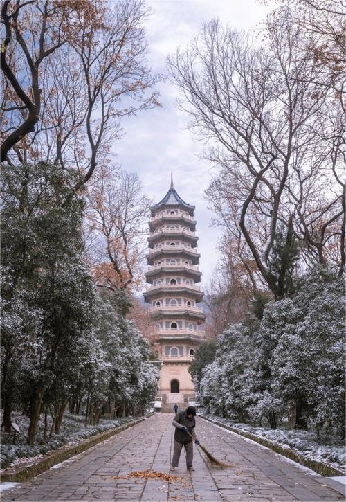

My Family
My family is a family of six, the six members of the family are my father, mother, grandmother, grandfather, my sister and me.
The Cities I Have been
Beijing
Beijing, the capital city of China, is a remarkable fusion of ancient history and modern vitality. Known as the heart of China, it's a city where millennia-old temples coexist with towering skyscrapers, symbolizing the harmonious blend of China's rich past and its rapid modernization.
The city's historical depth is encapsulated in its iconic landmarks. The Forbidden City, a palatial complex that served as the home of emperors for centuries, stands as a majestic reminder of China's imperial history. The Temple of Heaven, a stunning example of Ming Dynasty architecture, is not only a site of historical significance but also a serene park where locals practice Tai Chi at dawn.
Beijing's culinary scene is as diverse as its culture. The city is renowned for its Peking Duck, a dish known for its crispy skin and succulent meat, often accompanied by pancakes and sweet bean sauce. Traditional Beijing snacks like jianbing (savory crepes) and zhajiangmian (noodles with soybean paste) offer a taste of local flavors. The city's bustling night markets and old hutongs provide an authentic glimpse into Beijing's culinary heritage.
Modern Beijing is equally compelling, with its vibrant arts scene, bustling shopping districts like Wangfujing, and the 798 Art Zone, a hub for contemporary art. The blend of ancient tradition with modern innovation makes Beijing a city of endless discovery, where each visit reveals new layers of its vast, multifaceted identity.
Nanjing
Nanjing is a city where history and modernity intertwine in a beautiful tapestry. Known as the "Southern Capital," it has been a significant cultural and political center throughout China's history. Nanjing's charm lies not only in its rich historical heritage but also in its lush green landscapes and vibrant urban life.
The city's past is profoundly reflected in its ancient architecture, like the imposing Ming Dynasty City Wall, which stands as a testament to its historical significance. The Confucius Temple area, bustling with traditional markets and quaint tea houses, offers a glimpse into the old soul of Nanjing. Walking along the Qinhuai River, especially in the evening, one can experience the poetic ambiance of ancient China, as red lanterns light up the riverbanks, casting a warm glow over the water.
Nanjing's culinary scene is a delightful exploration of flavors. The city is famous for its Duck Blood Soup, a unique delicacy that has been a local favorite for generations. Another must-try is the salted duck, a dish that encapsulates the essence of Nanjing's culinary tradition. For those with a sweet tooth, the glutinous rice balls, known as Tangyuan, are a treat, symbolizing family unity and happiness.
The fusion of modernity and tradition in Nanjing is also evident in its bustling shopping districts like Xinjiekou, where contemporary malls and traditional shops coexist harmoniously. Amidst this vibrant urban landscape, the serene Xuanwu Lake provides a tranquil retreat, with its picturesque views and peaceful paths, perfect for a leisurely stroll or a quiet moment of reflection.
Nanjing, with its rich tapestry of history, culture, and natural beauty, is not just a city but a living museum, offering a journey through time and an immersive experience into the heart of Chinese culture.